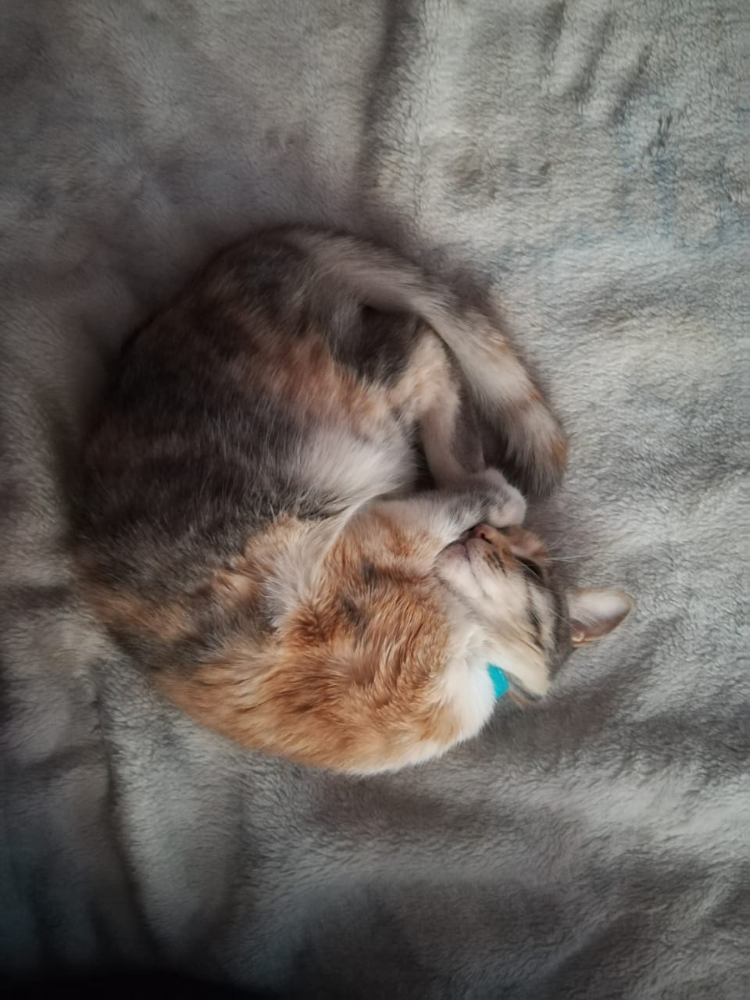

La cereza del pastel

Cherry es el nombre de mi gatita, ella va a cumplir 6 años. Llegó a casa cuando era muy pequeña; tenía menos de 2 meses. Es muy juguetona y engreída, no le gusta la gente ni ir al veterinario.